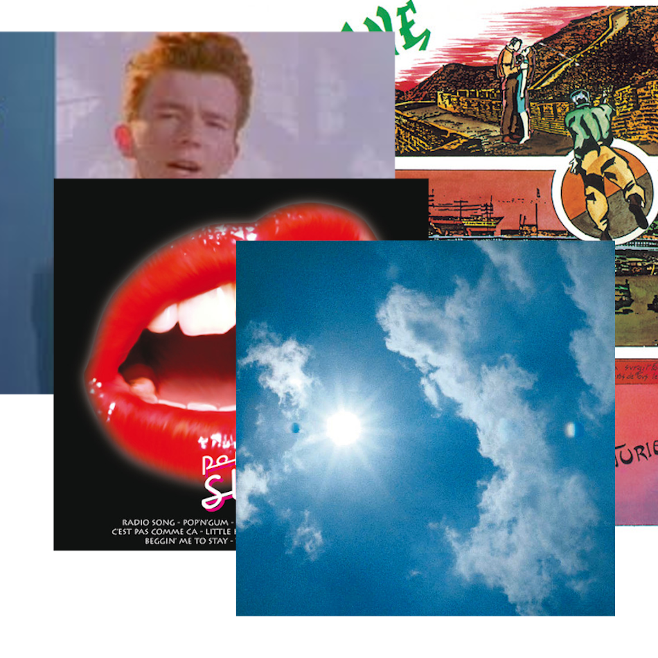

You are on the number 1 musical website
Rock hub
panier
Everything is free !!!!
Welcome to RockHub, the ultimate destination for all things French rock music! At RockHub, we're passionate about bringing you the best French rock music, playlists and merch in one convenient location.
Our extensive selection of French rock music includes both classic and contemporary hits from some of the most popular French rock bands and artists. Whether you're a die-hard fan or a newcomer to the genre, we've got something for everyone.
In addition to music, we offer a variety of playlists curated by our expert team of music enthusiasts. From mood-based playlists to genre-specific compilations, our playlists are designed to help you discover new favorites and rediscover old classics.
And finally, no visit to RockHub would be complete without checking out our exclusive selection of French rock music merch. From t-shirts and hoodies to posters and accessories, our merch is the perfect way to show off your love for French rock music.
So whether you're looking for the latest French rock hits, expertly curated playlists, or exclusive merch, RockHub has got you covered. Start exploring today and discover the best of French rock music!
Rock
Hub

Our collection of free French rock songs is a tribute to the vibrant and diverse music scene in France. From classic rock to modern pop-rock, we offer a wide variety of songs that showcase the incredible range of French rock music.
Our songs are performed by some of the most talented musicians and bands from France, and each track has been carefully selected to provide a unique listening experience. Some of our most popular songs include "Les Enfants Terribles" by Lescop, "La Vie Est Belle" by Indochine, and "Sur Un Prélude De Bach" by Maurane.
Whether you're a fan of classic rock, indie, or pop-rock, our collection has something for everyone. And best of all, our songs are completely free to download and enjoy, so you can listen to your favorite French rock tracks anytime, anywhere.
So why wait? Start exploring our collection today and discover the amazing world of French rock music for yourself!
Introducing our hand-curated collection of French rock music playlists, featuring some of the best and most popular tracks from the French rock scene. Our playlists offer a unique and diverse listening experience that is perfect for fans of all kinds of rock music.
Our playlists are created by music experts who have a deep passion for French rock music, and each one is carefully crafted to take you on a musical journey that is both exciting and immersive. Whether you're looking for high-energy tracks to get you pumped up, or more mellow tunes to relax to, our playlists have you covered.
Some of our most popular playlists include "French Rock Classics," which features iconic tracks from some of the most well-known French rock bands of all time, such as Téléphone and Noir Désir. We also offer playlists that showcase more contemporary artists like Christine and The Queens and La Femme, as well as playlists that focus on specific genres like indie rock and pop-rock.
With our French rock music playlists, you can explore the vast and diverse world of French rock music, all while discovering new and exciting artists and tracks along the way. So why not give it a try today? Download one of our playlists and immerse yourself in the amazing world of French rock music!
Our French rock music t-shirts are the perfect way to show your love and support for your favorite French rock bands and musicians. Our collection of t-shirts features a variety of iconic and stylish designs that are sure to turn heads and make a statement wherever you go.
Our t-shirts are made from high-quality materials, ensuring that they are both comfortable to wear and long-lasting. They are available in a range of sizes and styles, so you can find the perfect fit for you.
Whether you're a fan of classic French rock bands like Téléphone or newer artists like Christine and The Queens, we have a t-shirt design for you. From bold graphics and logos to more understated designs, our collection has something to suit every style and taste.
Not only are our French rock music t-shirts stylish and comfortable, but they also make the perfect gift for the music lover in your life. And with our affordable prices, you can stock up on all your favorite designs without breaking the bank.
So why wait? Browse our collection of French rock music t-shirts today and show your love for the incredible world of French rock music!
Creators
Moi
Couzi